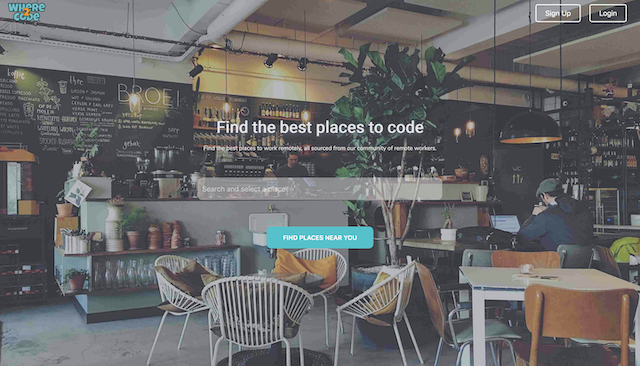
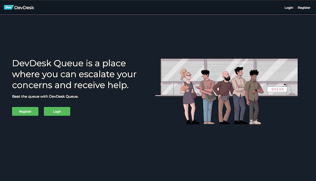
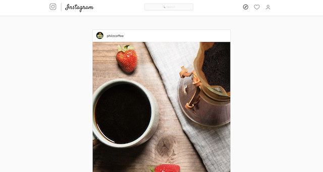
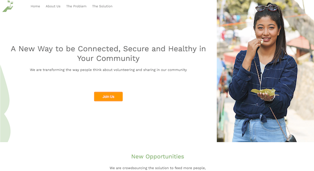
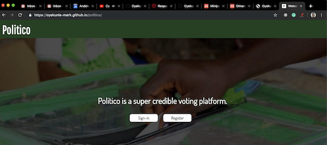

Projects
Where to Code
Finding out details about public places to work can be tedious. WhereToCode enables you to get the information you need, and only that information, to work and code on the go.
A fullstack JavaScript project built with React on the frontend and Express and PostgreSQL on the backend
DevDesk Queue
Students at Lambda School need a place where they can escalate their concerns and receive help. This app allows an admin to manage help desk tickets that come in from Lambda School Students. It also allows students (A 2nd user type) to submit a help desk ticket, categorize it and post it to the help channel.
Built with React and Styled-Components.
Instagram Clone
A recreation of the famed Instagram web app.
Built with React and Styled-Components.
Replate
This is a Marketing landing page for the Replate Project. Replate a responsive web app that will gamify social impact to reduce food waste and create a connected community. The app allows users to: Sign up to learn more about how you can fight hunger, save food and connect to their community. Choose the community role and set their profile preferences to donate, volunteer or receive. Get started by posting a donation, accepting a delivery request or accepting a delivery!
Built with vanilla JavaScript, CSS and HTML.
Politico
Politico enables citizens to give their mandate to politicians running for different government offices while building trust in the process through transparency.
The frontend is built with vanilla JavaScript and CSS and the backend is built with Node/Express and a PostgreSQL.